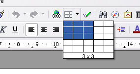
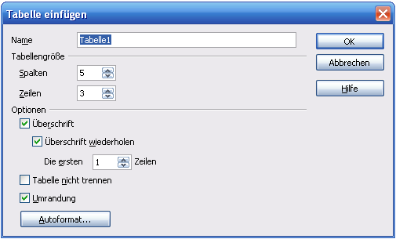
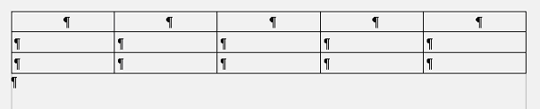
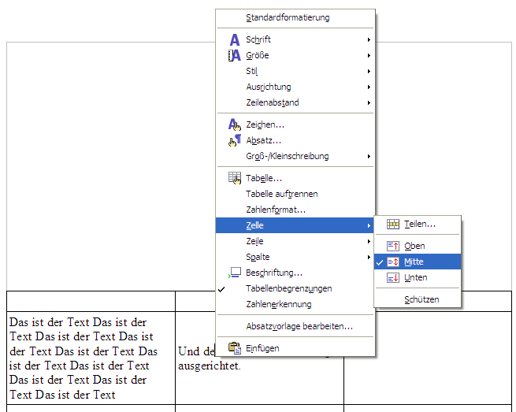
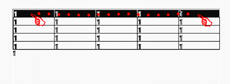
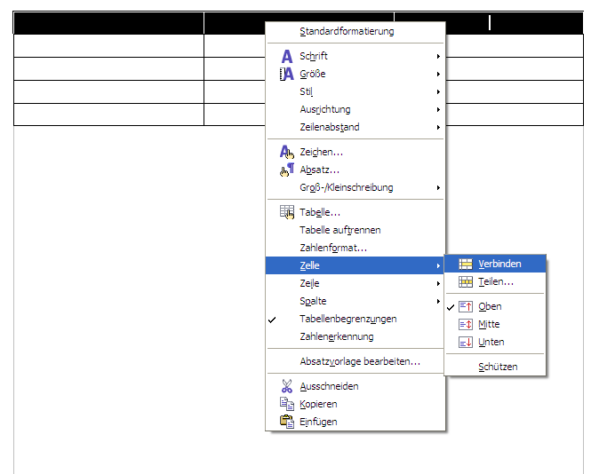
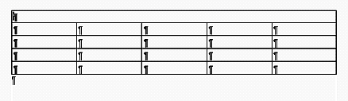

| [zurück] | [Hauptmenü] |
[weiter] |
OpenOffice.org Textdokument
-
Tabelle
Wozu Tabellen? Eine Tabelle ist mehr als nur eine
tabellarische Auflistung von Zahlen oder Worten, wie man es
in einem ersten Ansatz vermuten würde. Nein, viel mehr
sind Tabellen grundlegende Werkzeuge, um Text in Kombination
mit anderem Text oder Objekten (z.B. Bildern)
ansprechend auf einem Blatt Papier ausrichten zu können.
Tabellen sehen so aus, dass sie ein Raster aus Zeilen und
Spalten sind. Ein Feld wird dabei als Zelle bezeichnet; in
einer Zelle kann je nach Belieben alles Mögliche sein -
eine Zelle verhält sich im Inneren ähnlich wie ein
ganzes Textdokument. Hinzu kommt, dass benachbarte Zellen zu
einer einzigen Zelle zusammengefasst werden können -
hiermit lässt sich der sture Raster sprengen und
interessantere Möglichkeiten tun sich auf.
Erstellen
Eine Tabelle wird entweder über das entsprechende Symbol
in der Werkzeugleiste
oder über das Menü:
Einfügen>Tabelle... erstellt.

Bevor die Tabelle jedoch erstellt wird, erscheint folgendes Fenster:
Bevor die Tabelle jedoch erstellt wird, erscheint folgendes Fenster:
Informationen eingeben und danach OK klicken.

Dann erscheint die gewünschte Tabelle.

Bearbeiten
Jetzt kann man schon beginnen, an dieser Tabelle zu
arbeiten: man kann wie gesagt Zellen verbinden, Spalten
einfügen oder Löschen, Zeilen einfügen
oder löschen - diese Icons: - Ausrichtungen
ändern (das bedeutet sowohl horizontal links-,
mittel- und rechtsbündig als auch vertikal oben-,
mitten- und untenbündig) den Text oder das Bild
auszurichten.
Am einfachsten erledigt man das so, dass man den Cursor
in die betreffende Zelle stellt (oder beim Vereinigen
die zu vereinigenden Zellen markiert) und mit der
rechten Maustaste das Kontextmenü aufruft:
|

|
|
Hier wird der Zelleninhalt vertikal mittig
ausgerichtet
|
Mehrere Zellen zu verbinden:
 2. rechte Maustaste > Kontext-Menü

3. Ergebnis

|
|
Hier werden Zellen verbunden. Anstatt dem
Kontextmenü hätte man auch das
entsprechende Icon in der Objektleiste
verwenden können!
|
Außerdem bietet die Möglichkeit Rahmen zu
formatieren ein weiteres oft willkommenes Hilfsmittel an. Das
wird über diese Symbole aufgerufen:
.
Das linke formatiert den Rahmen,
das mittlere die Rahmenart und das rechte die Füllfarbe
der Zellen. Außerdem lässt sich das über
einen leicht zu bedienenden Optionen-Dialog
verändern:
- stellen Sie den Cursor in die betreffende Zelle oder markieren Sie die betreffenden Zellen
- klicken Sie mit der rechten Maustaste für das Kontextmenü
- gehen Sie auf Tabelle...
- dort auf die Registrierkarte Umrandung
| [zurück] | [Hauptmenü] |
[weiter] |
© Copyright 2003, Harald Schilly
This documentation is part of "Erste Schritte: OpenOffice.org Textdokument", which is released
under the terms of the PDL.
For full copyright and license info read the index page.
Contributors are: Wieland Peter